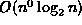
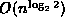
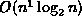

Data Structures and Algorithms
with Object-Oriented Design Patterns in Java
Data Structures and Algorithms
with Object-Oriented Design Patterns in Java
For many divide-and-conquer algorithms
the running time is given by the general recurrence
shown in Equation  .
Solutions to the recurrence depend on the relative
values of the constants a, b, and k.
Specifically, the solutions satisfy the following bounds:
.
Solutions to the recurrence depend on the relative
values of the constants a, b, and k.
Specifically, the solutions satisfy the following bounds:
Table shows how to apply Equation
to find the running times of the divide-and-conquer algorithms
described in the preceding sections.
Comparing the solutions in Table with those
given in Table shows the results obtained using
the general formula agree with the analyses done in the preceding sections.
| program | recurrence | a | b | k | case | solution |
| Program | T(n)=T(n/2)+O(1) | 1 | 2 | 0 | |  |
|
Program | T(n)=2T(n/2)+O(1) | 2 | 2 | 0 | |  |
|
Program | T(n)=2T(n/2)+O(n) | 2 | 2 | 1 | |  |
 Copyright © 1998 by Bruno R. Preiss, P.Eng. All rights reserved.
Copyright © 1998 by Bruno R. Preiss, P.Eng. All rights reserved.